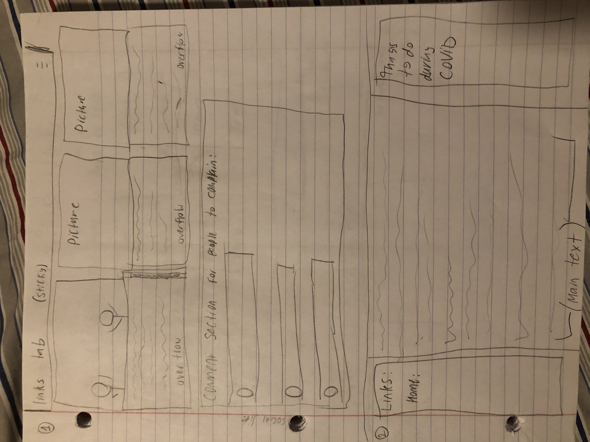
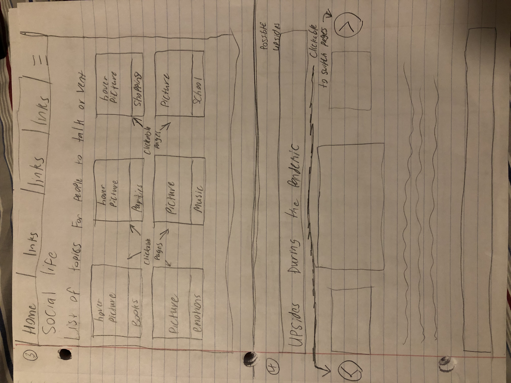
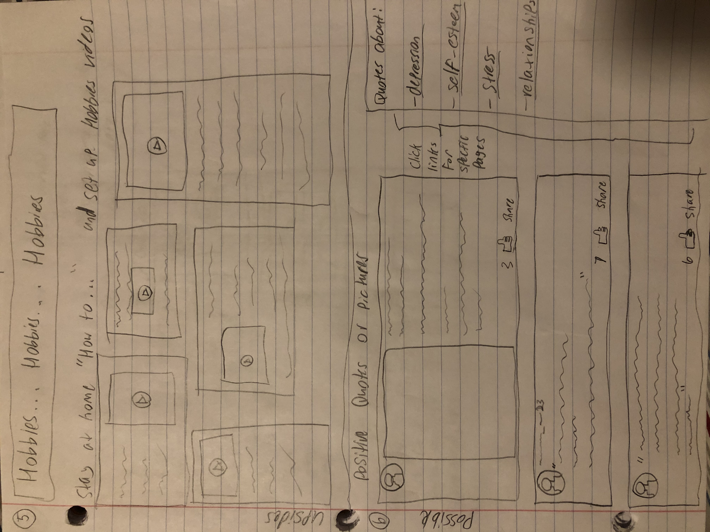
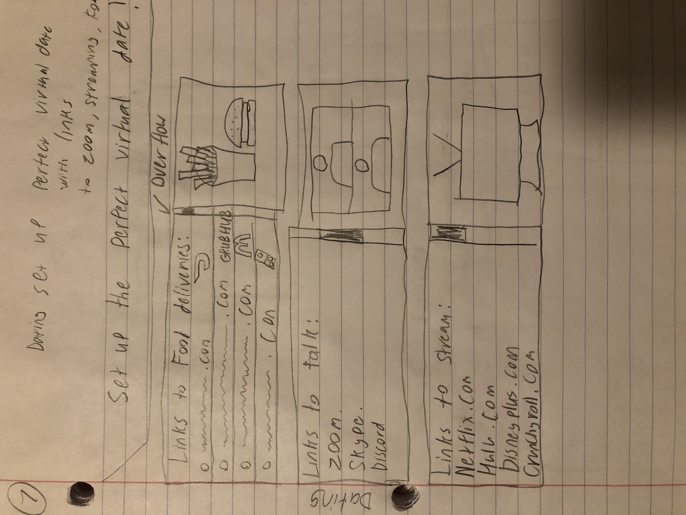
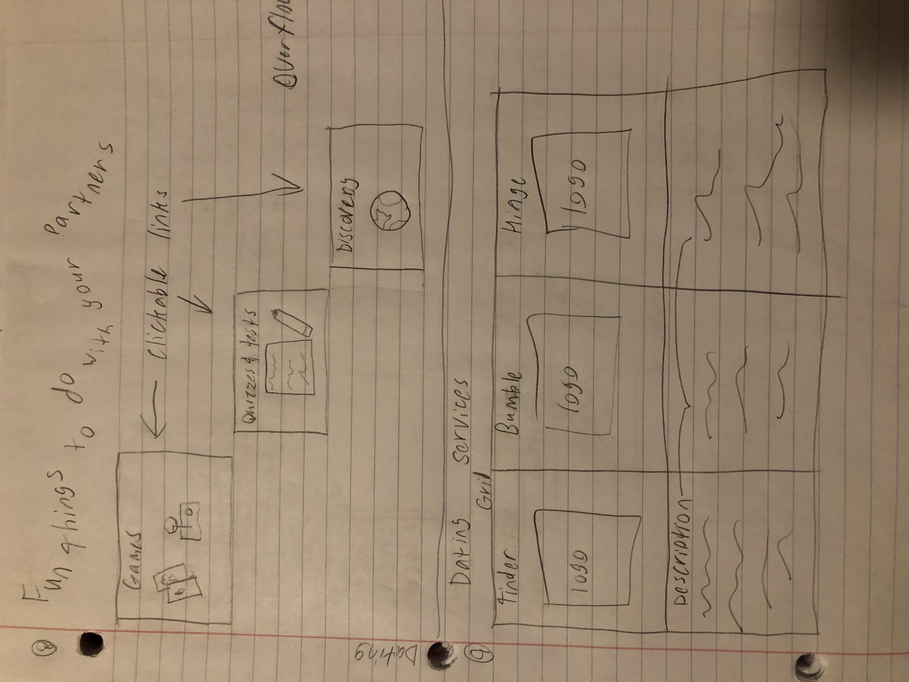
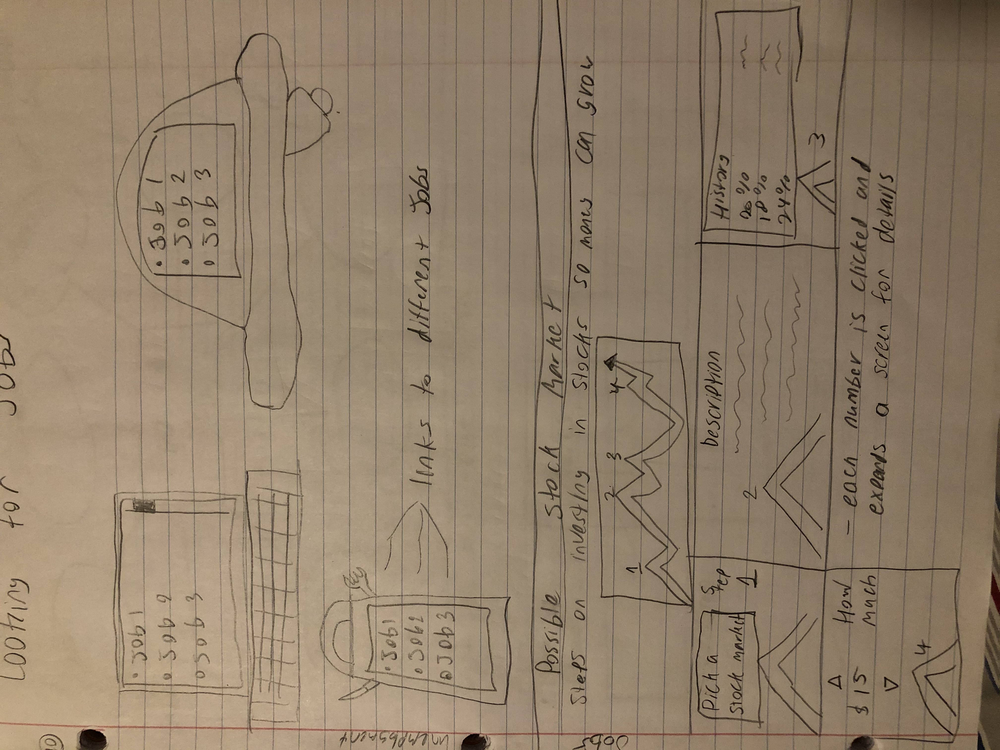
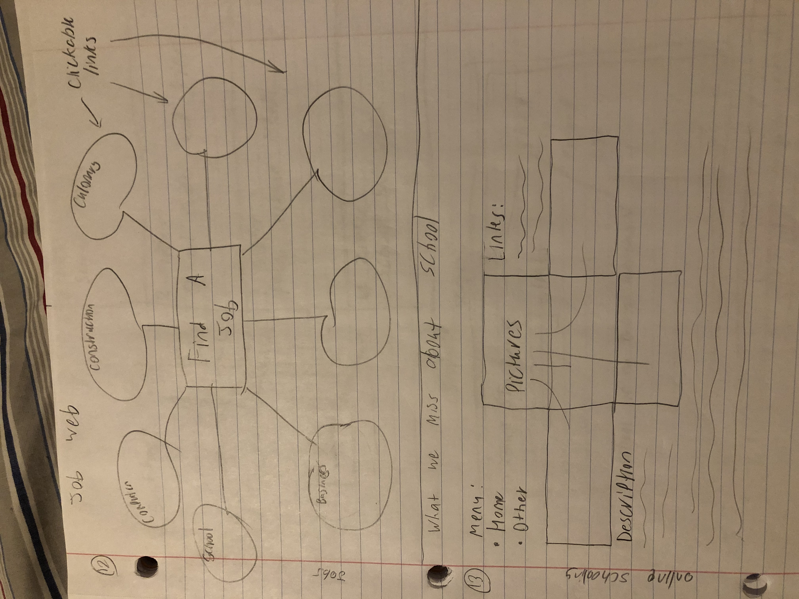
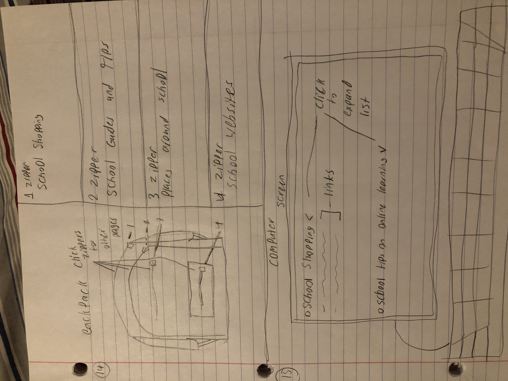

Lab 20
Challenges
For this lab, we had to draw up a bunch of sketches for our project webpage which was the challenge for me. I am very picky in details so it was a bit difficult to not redo something or leave things the way they were.
Problems
The problems came about because I would not be quick during the drawing process. I would spend way to much time on some without knowing. Plus, another hardship i faced was trying to come up with new sketches that were different than before. I feel like you can only design a website a few ways with the skills that we have.
Results
I got the sketches done but not real happy of the work. Luckily, this is just the first step and prototyping. Yet, it still bothers me but I got it done.
       